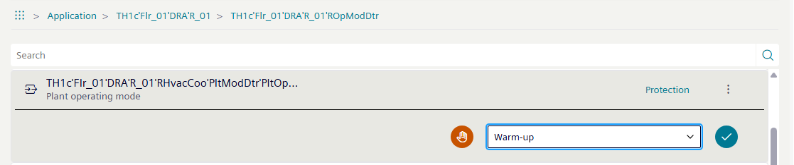

Commanding plant operating mode (room)
The present operating state of the HVAC plant in a room depends on room operating mode, central supply signals, and local influences. Local influences here include window contact or presence detector. In addition to room operating modes Comfort, Pre-Comfort, Economy, and Protection, there is states Night cooling, boost heating, and rapid cooling for the plant operating mode. The three additional operating modes are controlled from the central functions and are used to optimize energy and comfort.
For more information, see the document: Desigo Room Automation Range Description A6V10866237
- Go to the Object view tab.
- Select Application.
- Select [Room number] > Room operating mode determination.
- Select .
- Select Plant operating mode.
- Select .
- The manual indication changes to .
- In the drop-down list, select the desired operating mode:
- Protection
- Economy
- Pre-Comfort
- Comfort
- more options are available

- Select to send the command.